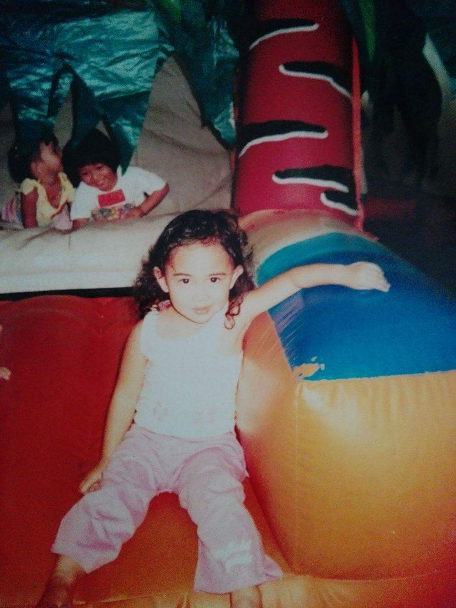
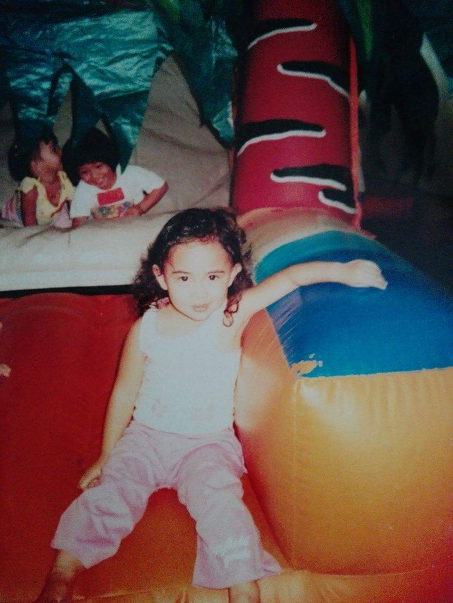
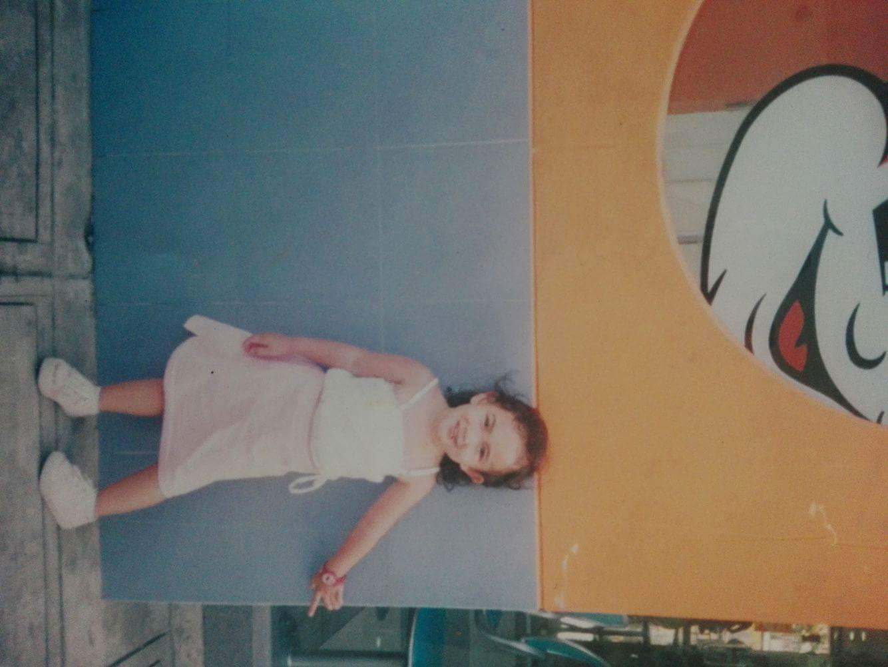
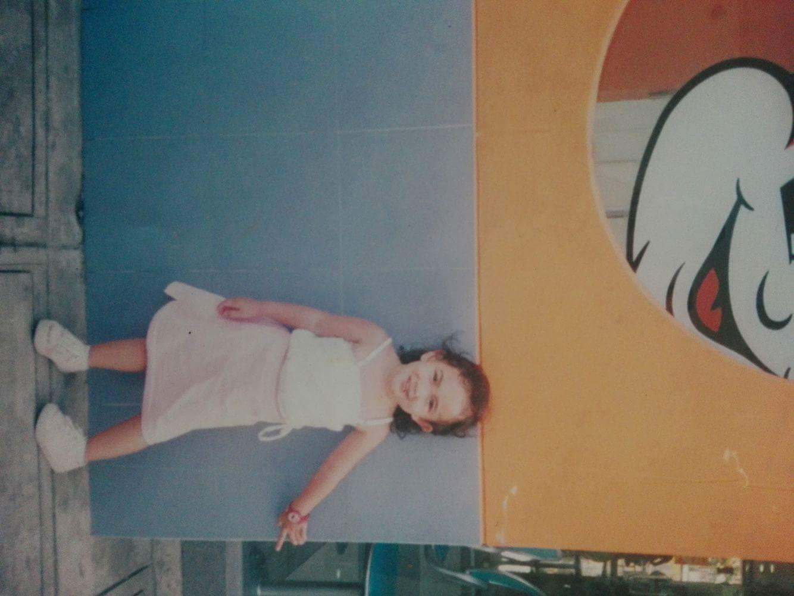

My Photo Gallery
Embark on a journey through my world of passions, interests, and skills, where every hobby is a brushstroke of self-expression, every interest a beacon of curiosity, and every skill a testament to dedication.
Embark on a journey through my world of passions, interests, and skills, where every hobby is a brushstroke of self-expression, every interest a beacon of curiosity, and every skill a testament to dedication.
I'm drawn to a variety of interests that engage my intellect and creativity. Electronic-related hobbies like programming, 3-D rendering, and data analytics stimulate my mind and offer opportunities for creative problem-solving. I'm particularly captivated by the construction and repair of computers, finding satisfaction in troubleshooting and fixing issues like solving a complex puzzle. Moreover, I've always been intrigued by the intricate inner workings of these machines, which has fueled my passion for exploring electronic systems further. Additionally, video games and cinematic experiences provide me with solace and a chance to escape into imaginative worlds, offering a reprieve from my incessant thoughts. The immersive nature of these mediums allows me to temporarily detach from reality and recharge my mental batteries. Furthermore, the spirit of exploration drives me to delve into diverse activities, from going to the beach to contemplating the mysteries of the universe, enriching my understanding of the world and broadening my horizons. These experiences not only provide me with intellectual stimulation but also offer moments of relaxation and introspection. Additionally, science holds a special place in my heart, fueling my curiosity and analytical nature as I explore topics from astronomy to biochemistry. Delving into the complexities of the natural world fills me with a sense of wonder and awe, motivating me to unravel its mysteries further. Moreover, embracing the title of "mad scientist," I revel in the pursuit of knowledge for its own sake, unafraid to explore unconventional ideas and challenge established norms. Lastly, strategy games like chess appeal to my logical and intuitive faculties, offering valuable lessons in foresight and decision-making. The strategic challenges posed by these games provide me with an opportunity to hone my analytical skills and exercise my mental prowess. In summary, my interests reflect a harmonious blend of intellect, creativity, and exploration, enriching my life and broadening my horizons.
I am capable with a unique set of skills that have shaped my approach to life and defined my interactions with the world around me.1 Central to my identity are three distinct attributes: creativity, adaptability, and problem-solving skill.2 These traits define who I am and how I navigate the world around me.3 Creativity is my fuel.4 Whether I'm drawing, writing, or just thinking, my mind is always buzzing with new ideas.5 While some might see me as serious and logical, they're missing out on the colorful imagination that drives me forward.6 Adaptability is my strength. 7 Change doesn't scare me; it excites me.8 I thrive on new challenges, always ready to explore and grow.9 Instead of fearing the unknown, I see it as a chance to learn and expand my horizons.10 Problem-solving is my superpower.11 I love diving into complex problems and finding innovative solutions.12 Whether it's unraveling a puzzle or tackling a tough question, I approach each challenge with curiosity and determination.13 But there are also challenges. 14 Understanding emotions and navigating relationships can be tricky for me.15 While I excel in logic, emotions can sometimes feel like uncharted territory.16 Still, I'm determined to learn and grow in this area too.18


 


 
